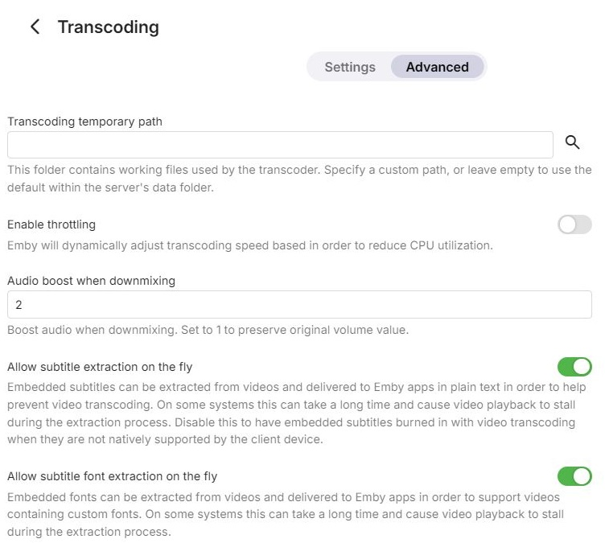
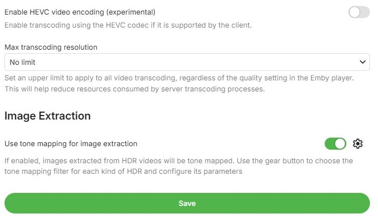
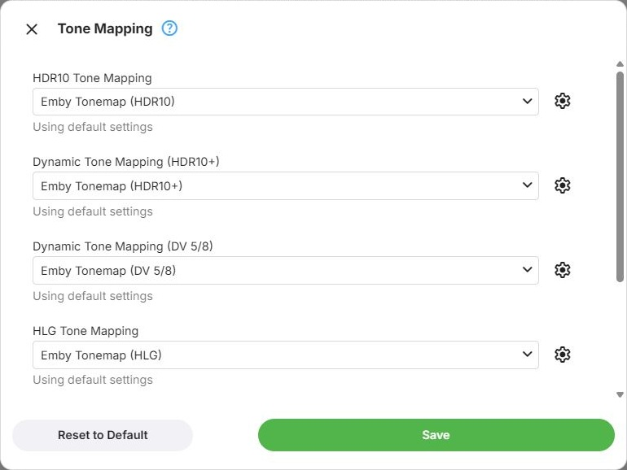

Advanced Settings
Advanced Transcoding Settings
These options sit on the Advanced tab of the Transcoding page and apply to transcoding generally, independently of which device performs it. Which device does the work, and how, is configured on the Settings tab instead. That includes HDR tone mapping for playback, which is chosen per device - see Device Configuration.

Transcoding Temporary Path
Transcoding produces temporary files, and this is where they are written. Leaving it unset uses the server's own default location.
If you set a custom path, make sure that:
- the folder is writable
- the folder is not used for anything else - the server deletes its contents to keep it clean
Transcoding Throttle
Off by default. When it is on, Emby holds back transcoding for playback once the transcoder is far enough ahead of what the app has requested, rather than transcoding the rest of the item as fast as possible. That lowers the load on the CPU or GPU, which matters most when several streams run at the same time - see Transcode throttling.
Audio Boost
Converting surround audio down to two-channel stereo commonly leaves the result quieter than the original. The audio boost is a scale factor that compensates for this. The default is 2, meaning the volume is doubled when surround is down-mixed to stereo. Set it to 1 to keep the original volume.
On-the-Fly Subtitle Extraction
On by default. Subtitles embedded in a video can be extracted and delivered to the app as text, which often avoids transcoding the video just to show them. On some systems the extraction takes long enough for playback to stall while it runs.
When it is off, embedded subtitles that the app cannot display are burned into the video instead, which requires transcoding.
On-the-Fly Font Extraction
On by default. Fonts embedded in a video can be extracted and delivered to the app, so that subtitles which use custom fonts are shown as intended. Like subtitle extraction, this can take long enough on some systems for playback to stall meanwhile.
HEVC Encoding
Off by default, and experimental. When it is on, Emby transcodes to HEVC instead of H.264 for apps that support it.
Maximum Transcoding Resolution
Caps the resolution transcoded output may have, regardless of the source. The choices are no limit, 4K, 1080p, 720p and 480p.
The limit applies to all video transcoding, whatever quality is selected in the player, and so reduces the resources each transcode takes.

Image Extraction
Emby extracts still images from videos - the primary image, chapter images and thumbnails. Taken from HDR video without tone mapping, these come out pale and washed out.
Use tone mapping for image extraction, on by default, tone maps images extracted from HDR video. It requires an active Emby Premiere subscription. The gear button next to it opens a dialog that chooses the tone mapping filter for each kind of HDR, and configures the filter's parameters:
- HDR10 Tone Mapping - HDR10
- Dynamic Tone Mapping (HDR10+) - HDR10+
- Dynamic Tone Mapping (DV 5/8) - Dolby Vision profiles 5 and 8
- HLG Tone Mapping - HLG
Each list offers the software tone mapping filters, and No tone mapping. These choices are separate from the tone mapping used for playback. The filters and their parameters are described under Tone Mapping.
